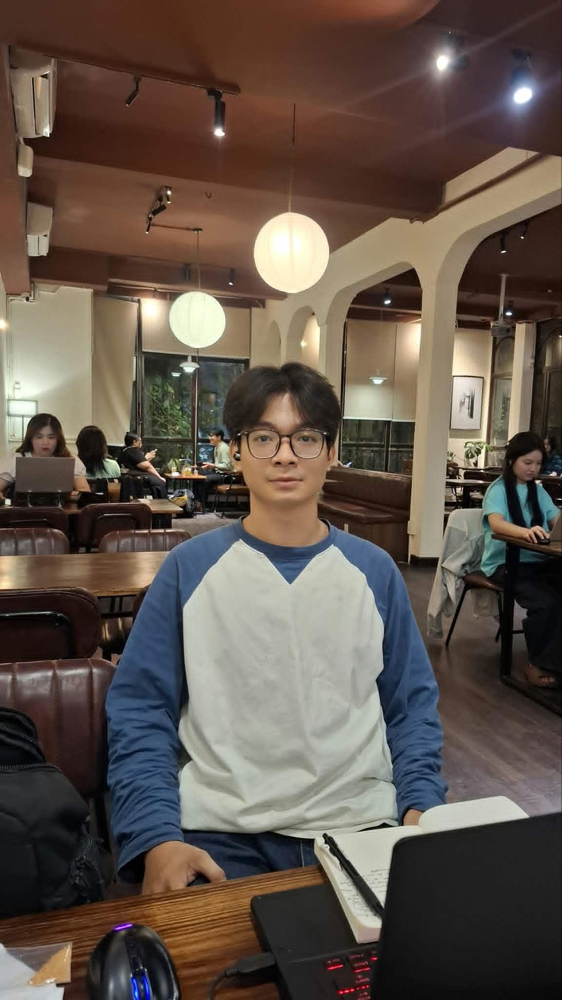

HELLO, I'M TRỊNH VĂN THIÊN PHÚC
Curiosity
in motion.
I shape ideas into UX/UI and digital experiences, with a frontend foundation and a curious mind.
EXPLORE MY WORK
001 / 003
Every idea
starts somewhere.
From a business introduction to a wedding story and a learning platform — different problems, one curious mind.
01 / A CLEARER DIGITAL PRESENCE
SLTech↗
A place for work to speak.
For a company working with partners and major project owners, I shaped the ideas, UX/UI, imagery and layout. AI agents supported implementation and testing.
DISCOVER THE PROJECT↗
02 / DESIGNING FOR FEELING
Elysian Wedding.

A story made to be felt.
Starting with the client's ideas, I review AI-assisted samples and refine the visual direction through their feedback.
DISCOVER THE PROJECT↗03 / LEARNING TOGETHER
GiaSu
VLU.
A place to learn together.
I shaped the UX/UI and flows, built the frontend and connected APIs. My teammate primarily handled the database and APIs.
Backend currently unavailable. Microsoft school-email login worked; Zoom and payments reached API tests only.
DISCOVER THE PROJECT↗
Always
exploring.
Games brought me to IT. Curiosity led me to design: exploring options, shaping interfaces and refining details until an experience feels right.
Away from the screen, I enjoy the gym, cycling, walks outside and time in nature.